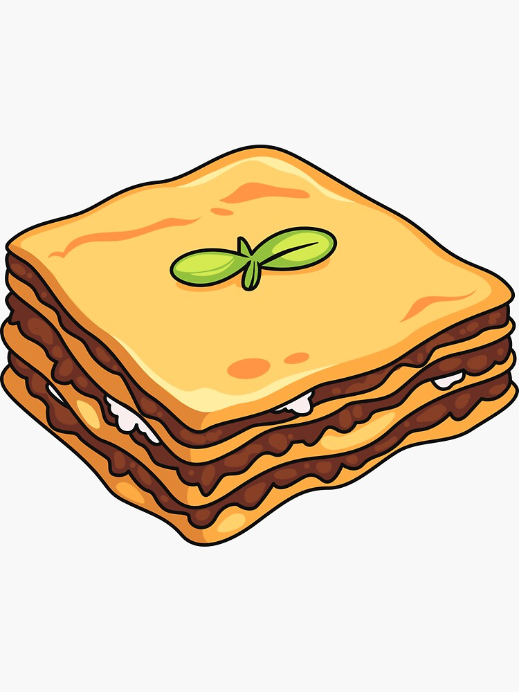

Lasagna

Lasagna is a classic Italian dish that's loved for its layers of pasta, rich meat sauce, and gooey cheese. Here's a straightforward recipe for a traditional lasagna.
Lasagna is a layered Italian casserole made with pasta, meat sauce, and cheese. To make it, start by cooking ground beef with onions, garlic, and tomato sauce, and
simmering it with herbs. Mix ricotta cheese with Parmesan and an egg. If using regular noodles, cook them until al dente. In a baking dish, layer meat sauce, noodles,
ricotta mixture, and mozzarella cheese. Bake at 375°F (190°C) covered for 25 minutes, then uncovered for an additional 20-25 minutes until bubbly and golden.
Let it rest before serving. Garnish with fresh herbs if desired.
Ingredients
- 1 lb (450g) ground beef
- 1 onion, finely chopped
- 2-3 cloves garlic, minced
- 1 can (15 oz) tomato sauce
- 1 can (15 oz) crushed tomatoes
- 2 tablespoons tomato paste
- 1 teaspoon dried basil
- 1 teaspoon dried oregano
- Salt and pepper to taste
- 1 tablespoon olive oil
- Prepare the Meat Sauce:
- Heat olive oil in a large skillet or saucepan over medium heat.
- Add the chopped onion and cook until soft and translucent, about 5 minutes.
- Add the minced garlic and cook for another 1 minute.
- Add the ground beef, breaking it up with a spoon. Cook until browned and no longer pink.
- Stir in the tomato paste, followed by the tomato sauce and crushed tomatoes.
- Add dried basil, oregano, salt, and pepper. Stir well.
- Reduce heat to low and let the sauce simmer for at least 30 minutes, stirring occasionally.
- Prepare the Cheese Mixture:
- In a bowl, combine ricotta cheese, grated Parmesan cheese, and egg. Mix well.
- Cook the Lasagna Noodles:
- If using regular lasagna noodles, cook them according to package instructions until al dente. Drain and lay them out on a sheet of wax paper or foil to prevent sticking.
- Assemble the Lasagna:
- Preheat your oven to 375°F (190°C).
- Spread a thin layer of meat sauce on the bottom of a 9x13-inch baking dish.
- Place a layer of lasagna noodles over the sauce, slightly overlapping them.
- Spread a portion of the ricotta cheese mixture over the noodles.
- Sprinkle with a layer of shredded mozzarella cheese.
- Repeat the layers: meat sauce, noodles, ricotta mixture, and mozzarella. Make sure to end with a layer of meat sauce and a generous topping of mozzarella cheese.
- Bake:
- Cover the dish with aluminum foil and bake for 25 minutes.
- Remove the foil and bake for an additional 20-25 minutes, or until the top is golden and bubbly.
- Let the lasagna rest for about 15 minutes before slicing. This helps the layers set and makes serving easier.
- Garnish and Serve:
- Garnish with fresh basil or parsley if desired.
- Serve with a side salad and garlic bread for a complete meal.